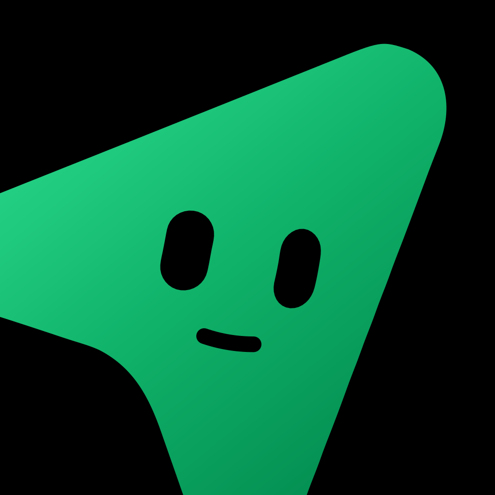

Download MausBot
The app is free and open source. Model usage requires an existing supported account or API key; provider fees and limits apply. Start with the desktop app. The phone apps connect to your running computer or server.
Desktop: macOS, Windows, Linux. Mobile: Android and iOS companions, shared in our Discord.
How to install
- 1
Download the .dmg for your chip — Apple silicon for M-series Macs, Intel for anything older.
- 2
Open the .dmg and drag the app (named OpenMausBot in the installer) to your Applications folder.
- 3
Open it from Applications. macOS may ask you to confirm opening a downloaded app. If installation fails, use the installation-help links below.
How to install
- 1
Download the .exe installer.
- 2
Run it. The installer needs no administrator rights.
- 3
If SmartScreen warns about an unknown publisher, check the release source and publisher details before proceeding. Windows signing is pending verification; contact support if unsure.
How to install
- 1
Download the .deb package.
- 2
Install it with apt — sudo apt install ./OpenMausBot-amd64.deb — or double-click it in your file manager.
- 3
Not on Ubuntu? Take the .AppImage instead, mark it executable, and run it; check your distribution’s AppImage requirements if it does not launch.
How to install
- 1
Join our Discord and ask for the Android app. The current build is shared there.
- 2
Install it on your phone. Android asks you to allow the install the first time: allow it, then install.
- 3
Open the app and pair it with MausBot on your computer. Keep MausBot open on your computer, with the computer awake and online. The phone is a remote for those bots.
How to install
- 1
Join our Discord and ask for the iPhone and iPad app. The link is shared there.
- 2
Open that link on your iPhone or iPad and install the free MausBot companion.
- 3
Open the app and pair it with MausBot on your computer. Keep MausBot open on your computer, with the computer awake and online. The phone is a remote for those bots.
From download to your first useful task.
Start with one bot and one provider. No connected apps or cloud computer needed.
Download the desktop app
Choose your computer’s installer and open MausBot. The phone apps are companions; start on your computer.
Connect one provider
Use the onboarding engine check to install and sign in to one supported agent, such as Claude Code or Codex. Follow its install or sign-in instructions, then check again. You can also find this in App settings → Agent engines.
Create your first bot
Select New or share → New bot. Give it a name, choose the connected engine and an available model. A working folder is only needed for tasks involving files.
Send a small, useful task
Copy the example below into your bot’s chat. It will suggest a two-hour plan for your morning. Adjust the plan to suit your day.
Try it: plan your morning
Help me plan tomorrow morning. I have two hours to reply to emails, write a project update, and prepare for a meeting. Suggest how much time to spend on each task and put them in a simple schedule.
Required: a supported computer, an internet connection, and a supported provider account or API key with model access. Provider fees and limits apply. Optional: connected apps, computer control, voice, mobile pairing, and paid Cloud hosting.
Installation help
If an engine is missing, finish its installation and sign-in, then refresh the engine check in App settings. If your phone cannot connect, keep the host computer awake, online, and running MausBot. Installer filenames may still use the project’s original OpenMausBot name.
- Desktop links request the latest published release. Release files may change; if a download fails, use the releases page.
- The whole app is Apache 2.0 licensed. Read the source on GitHub before you install it if you would rather.
- Something wrong with a build? Open an issue.
- New to the project? The introduction to MausBot covers what it does and how it compares to Grok Bot.